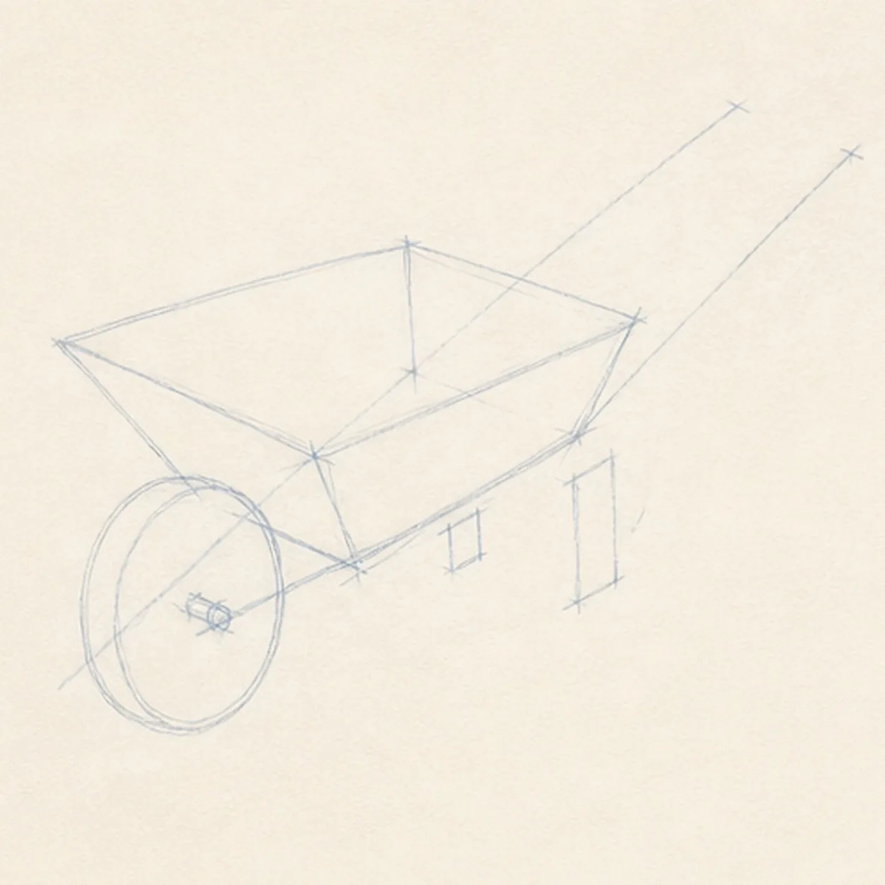
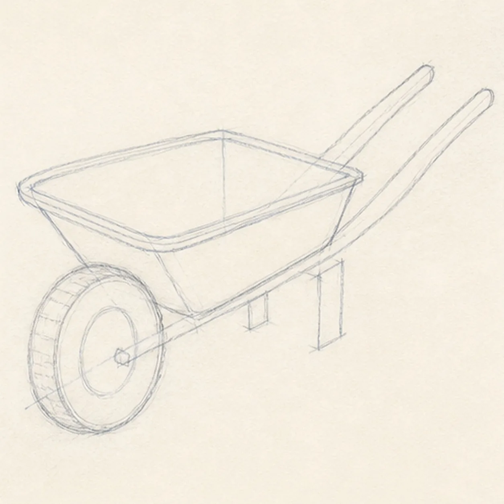
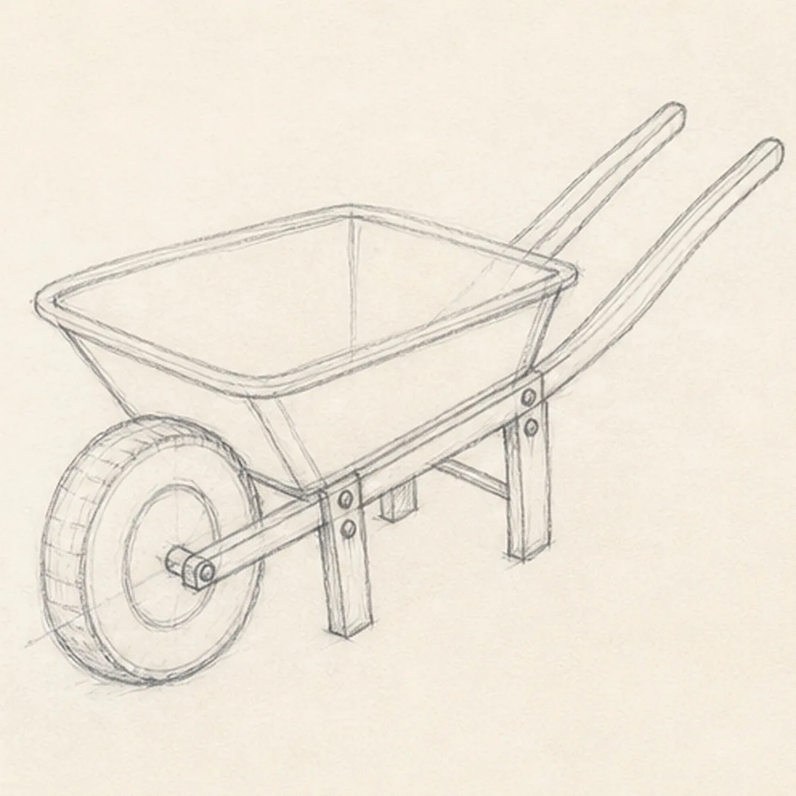
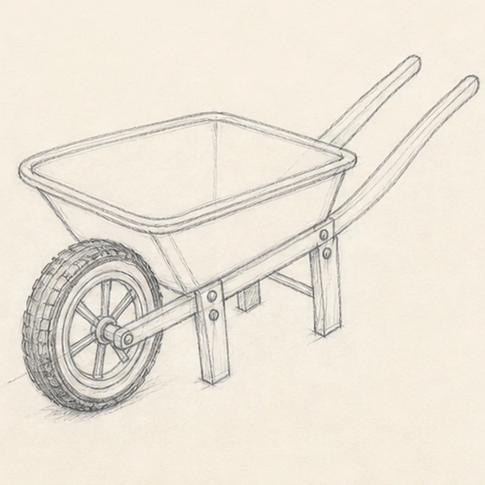
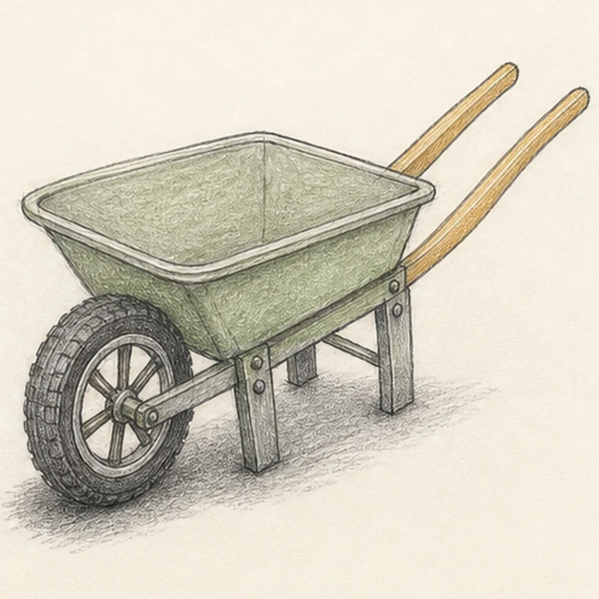

From the archive
Let's draw a garden wheelbarrow
Treat this as one small practice round: build the subject lightly, notice the shapes, then darken only the lines that help the finished sketch.
-
01

Set the tray, wheel, and handles
Build one pale tilted tray box, place one front wheel circle on its axle line, and ghost exactly two long handle axes extending behind the tray.
Sketch tip: Ghost the tray's long rim edges before touching down and compare how they converge. Reserve the opaque tray footprint instead of drawing finished frame detail through it.
-
02

Shape the working silhouette
Wrap the construction with the empty tray contour, thick single tire, and exactly two separated wooden handles while preserving the original three-quarter perspective.
Sketch tip: Rotate the page to pull each handle in one relaxed stroke. Squint at the open wedge between the handles; that negative space is an easier alignment check than measuring both rails.
-
03

Build the support frame
Add the axle frame beneath the established tray, exactly two planted support legs, two visible cross braces, and four small attachment bolts.
Sketch tip: Start each support line where it meets an existing tray or handle rail, then stop at the wheel or opaque tray edge. Avoid drawing hidden lines only to erase them later.
-
04

Add the rim and wheel hardware
Clarify the doubled tray rim, add one centered wheel hub with exactly six spokes, and mark restrained tread across the established tire.
Sketch tip: Place six light spoke endpoints around the rim before connecting them to the hub. Compare the empty wedges between spokes so the wheel reads evenly without looking machine-perfect.
-
05

Show metal, wood, rubber, and ground
Add sage-green pencil to the existing tray, warm ochre to both handles, graphite tire texture, and one broken cast shadow beneath the wheel and two legs.
Sketch tip: Pull color strokes along each material: broad strokes around the tray planes, long strokes down the handles, and short curved marks across the tire. Leave paper flecks visible.
-
06
Tune the garden-tool finish
Strengthen the keeper contours and clarify the established tray, single wheel, six spokes, two handles, two legs, braces, bolts, tread, restrained color, paper highlights, and cast shadow.
Sketch tip: Count one wheel, six spokes, two handles, and two planted legs, then stop while the structure stays clear. Soil, flowers, extra tools, or a garden scene would turn this compact tool study into a different lesson.